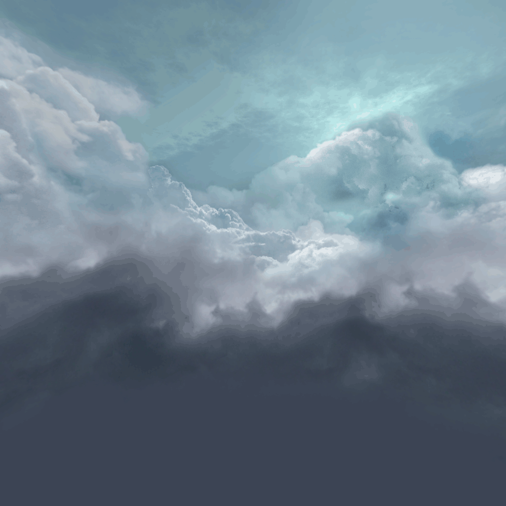
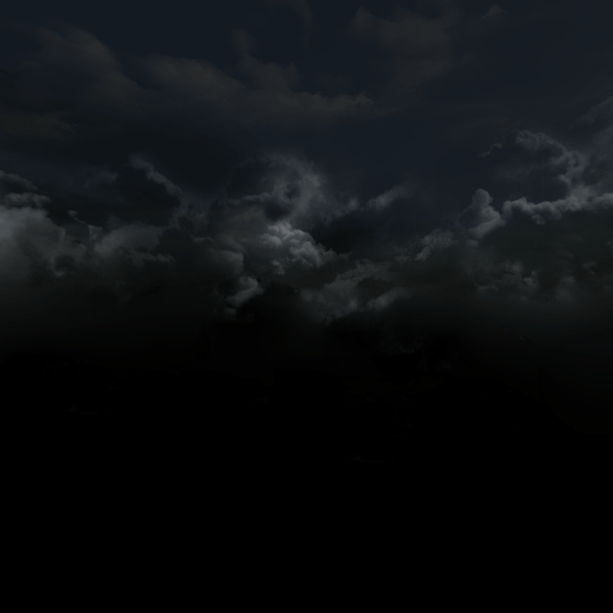

<body>
<style>
    html, body {
        margin: 0;
        padding: 0;
        width: 100%;
        height: 100%;
        display: flex;
        align-items: center;
        justify-content: center;
        background: #333;
    }

    #canvas {
        border: 1px solid;
        width: 100%;
        height: 100%;
    }
</style>
<canvas id="canvas"></canvas>
<script id="vertex_shader" type="x-shader/x-vertex">#version 300 es
    in vec4 a_position;
    in vec3 a_norm;
    in vec2 a_uv;

    uniform mat4 uPMatrix;
    uniform mat4 uMVMatrix;
    uniform mat4 uCameraMatrix;
    uniform mat3 uNormMatrix;
    uniform vec3 uCamPos;

    out vec3 vPos;
    out vec3 vNorm;
    out vec3 vCamPos;
    out highp vec2 vUV;

    void main(void){
        // Setup some fragment vars
        vec4 pos = uMVMatrix * vec4(a_position.xyz, 1.0); // Need position in world space
        vPos = pos.xyz;
        vNorm = uNormMatrix * a_norm; // Nedd Norm Scaled/Rotated correctly
        vUV = a_uv;
        vCamPos = (inverse(uCameraMatrix) * vec4(uCamPos, 1.0)).xyz; // Need to Move CameraPos into wolrd space for specular calculation

        gl_Position = uPMatrix * uCameraMatrix * pos;
    }


</script>
<script id="fragment_shader" type="x-shader/x-fragment">#version 300 es
    precision mediump float;

    uniform sampler2D uMainTex;
    uniform vec3 uLightPos;

    in vec3 vPos;
    in vec3 vNorm;
    in vec3 vCamPos;
    in highp vec2 vUV;

    out vec4 outColor;
    void main(void){
        // Setup basic Colors
//        vec4 cBase = vec4(1.0, 0.5, 0.5, 1.0); // Texture (uMainTex, vUV)
        vec4 cBase = texture(uMainTex, vUV);
        vec3 cLight = vec3(1.0, 1.0, 1.0); // The color of light

        // Setup ambient lighting
        float ambientStrength = 0.15;
        vec3 cAmbient = ambientStrength * cLight;

        // Setup diffuse lighting
        vec3 lightDir = normalize(uLightPos - vPos);

        float diffAngle = max(dot(vNorm, lightDir), 0.0);
        float diffuseStrength = 0.3;

        vec3 cDiffuse = diffAngle * cLight * diffuseStrength;

        // Setup specular lighting
        float specularStrength = 0.2;
        float specularShininess = 1.0;

        vec3 camDir = normalize(vCamPos - vPos);
        vec3 reflectDir = reflect(-lightDir, vNorm);

        float spec = pow(max(dot(reflectDir, camDir), 0.0), specularShininess);
        vec3 cSpecular = specularStrength * spec * cLight;

        // Final
        vec3 finalColor = (cAmbient + cDiffuse + cSpecular) * cBase.rgb; // Combined light strength applied it to the base color
        outColor = vec4(finalColor, 1.0);
    }


</script>







<script src="src/GL.js"></script>
<script src="src/Shader.js"></script>
<script src="src/RenderLoop.js"></script>
<script src="src/Model.js"></script>
<script src="src/Primitives.js"></script>
<script src="src/Math.js"></script>
<script src="src/Transform.js"></script>
<script src="src/Camera.js"></script>
<script src="src/Skymap.js"></script>
<script src="src/GridFloor.js"></script>
<script src="src/ObjLoader.js"></script>
<script src="src/Debug.js"></script>
<script src="src/Resources.js"></script>
<script>
    class TestShader extends Shader {
        constructor(gl, pMatrix) {
            const vertSrc = ShaderUtil.domShaderSrc('vertex_shader');
            const fragSrc = ShaderUtil.domShaderSrc('fragment_shader');

            super(gl, vertSrc, fragSrc);

            //Custom Uniforms
            this.uniformLoc.lightpos = gl.getUniformLocation(this.program, "uLightPos");
            this.uniformLoc.campos = gl.getUniformLocation(this.program, "uCamPos");
            this.uniformLoc.matNormal = gl.getUniformLocation(this.program, "uNormMatrix");

            this.setPerspective(pMatrix);
            this.mainTexture = -1; // Store texture id
            gl.useProgram(null);
        }

        setTexture(texId) {
            this.mainTexture = texId;
            return this;
        }

        setLightPos(obj) {
            this.gl.uniform3fv(this.uniformLoc.lightpos, new Float32Array(obj.transform.position.getArray()));
            return this;
        }

        setCameraPos(obj) {
            this.gl.uniform3fv(this.uniformLoc.campos, new Float32Array(obj.transform.position.getArray()));
            return this;
        }

        preRender() {
            this.gl.activeTexture(this.gl.TEXTURE0);
            this.gl.bindTexture(this.gl.TEXTURE_2D, this.mainTexture);
            this.gl.uniform1i(this.uniformLoc.mainTexture, 0);
            return this;
        }

        renderModel(model) {
            this.gl.uniformMatrix3fv(this.uniformLoc.matNormal, false, model.transform.getNormalMatrix());
            super.renderModel(model);
            return this;
        }
    }

    let radius = 1.5,
        angle = 0,
        angleInc = 1,
        yPos = 0,
        yPosInc = 0.2;

    function onRender(dt) {
        window.gCamera.updateViewMatrix();
        window.gl.fClear();

        window.gSkymap.render(window.gCamera);
        window.gGridFloor.render(window.gCamera);

        angle += angleInc * dt;
        yPos += yPosInc * dt;

        const x = radius * Math.cos(angle);
        const z = radius * Math.sin(angle);
        const y = MathUtil.Map(Math.sin(yPos), -1, 1, 0.1, 2);
        mDebug.transform.position.set(x, y, z);

        window.gShader.activate()
            .preRender()
            .setCameraMatrix(window.gCamera.viewMatrix)
            .setCameraPos(window.gCamera)
            .setLightPos(window.mDebug)
            .renderModel(window.gPirateModel.preRender());

        window.mDebug.render(window.gCamera);
    }

    window.addEventListener('load', function() {
        const gl = window.gl = GLInstance('canvas').fSetSize(600, 800).fClear();

        window.gCamera = new Camera(gl);
        window.gCamera.transform.position.set(0, 1, 3);
        window.gCameraCtrl = new CameraController(gl, window.gCamera);

        window.gSkymap = new Skymap(gl)
            .setDayTexByDom('cube01_right', 'cube01_left', 'cube01_top', 'cube01_bottom', 'cube01_back', 'cube01_front')
            .setNightTexByDom('cube02_right', 'cube02_left', 'cube02_top', 'cube02_bottom', 'cube02_back', 'cube02_front')
            .setTime(0.7).finalize();

        window.gGridFloor = new GridFloor(gl);

        window.mDebug = new VertexDebugger(gl, 10).addColor('#ff0000').addPoint(0, 0, 0, 0).finalize();

        Resources.setup(gl, onReady)
            .loadTexture('pirate_girl', { src: 'models/pirate_girl.png', doYFlip: true })
            .loadObjFile('pirate_girl', 'models/pirate_girl.obj')
            .start();

        window.RLoop = new RenderLoop(onRender, 60);
    });

    function onReady() {
        window.gShader = new TestShader(gl, window.gCamera.projectionMatrix)
            .setTexture(gl.mTextureCache['pirate_girl']);

        window.gPirateModel = new Model(gl.mMeshCache['pirate_girl']).setScale(0.5, 0.5, 0.5);

        window.RLoop.start();
    }

</script>
</body>
